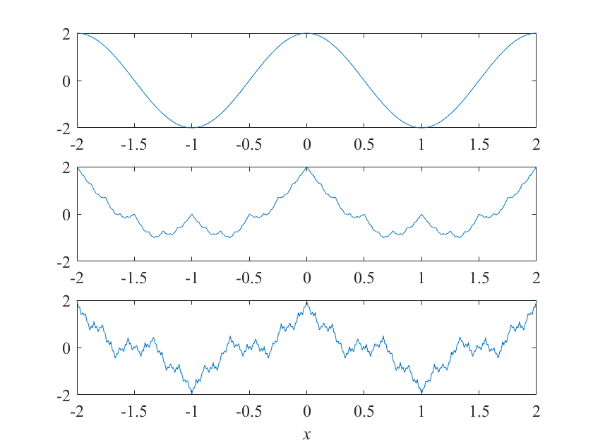
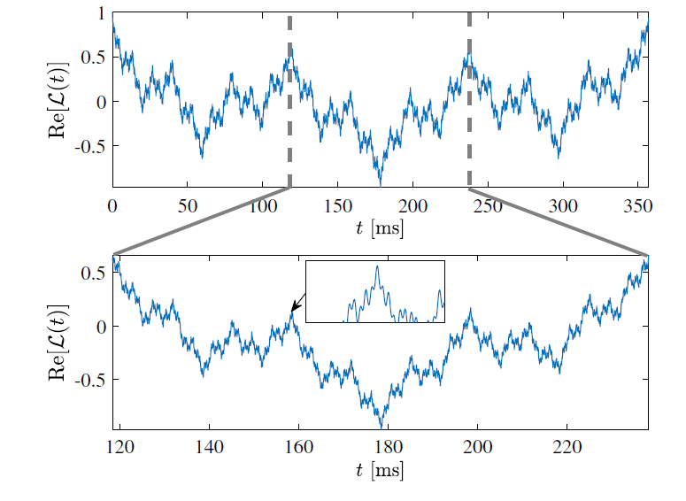
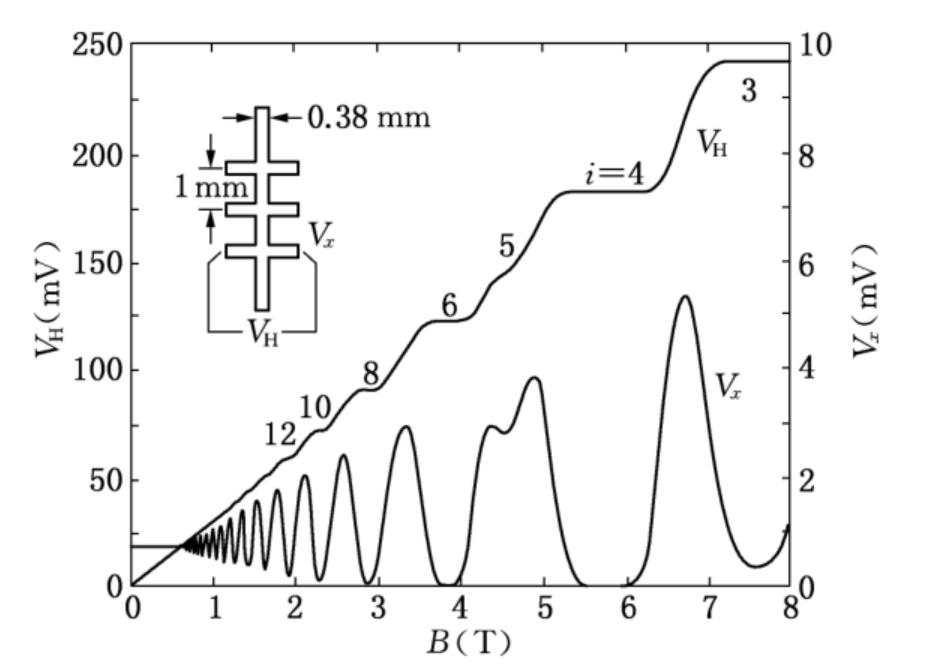
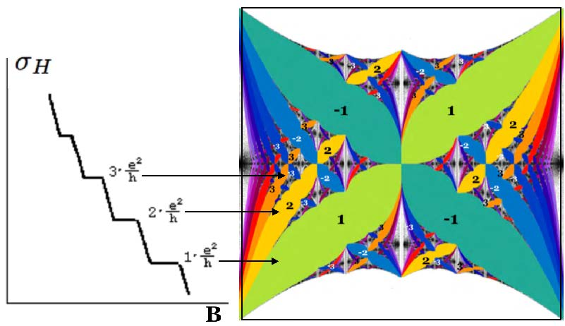
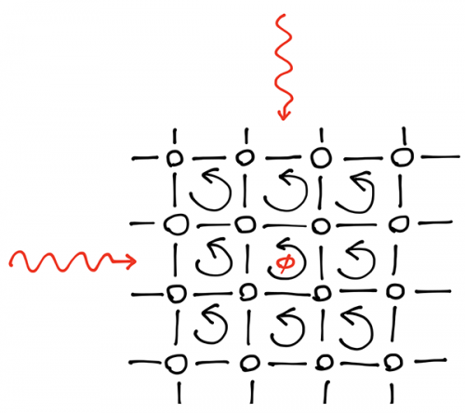
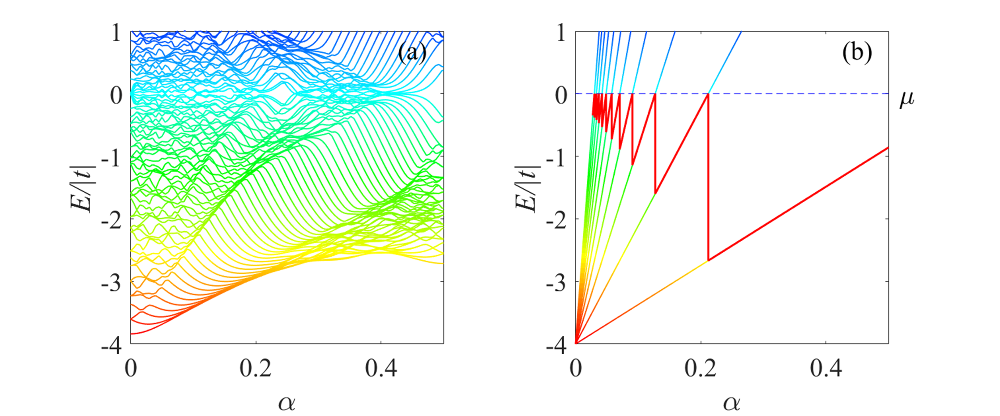
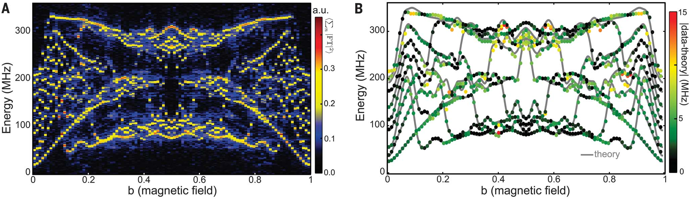
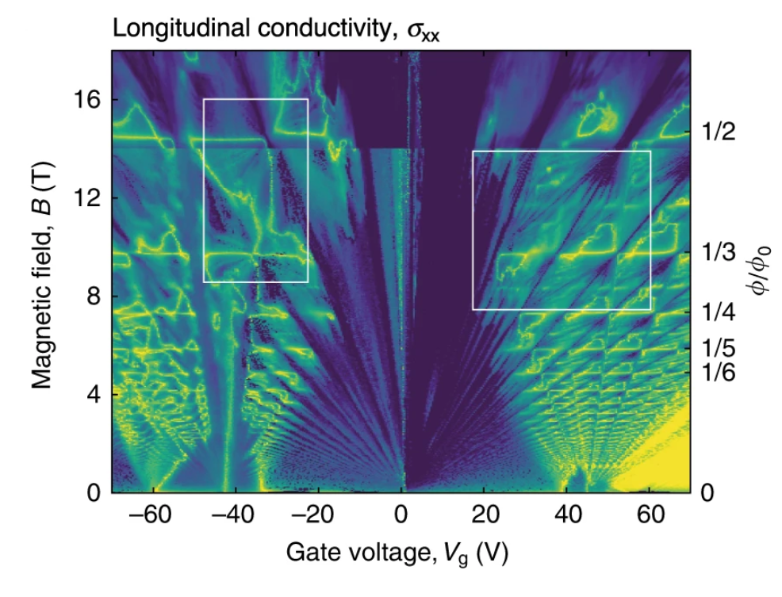

量子分形世界-Hofstadter蝴蝶
从霜花到海岸线，自然界中分形无处不在，近现代物理学中同样不断能够找到分形的影子. 本文回顾了通过类比 Weierstrass 函数，可以从量子气体中寻求到相应的动力学分形. 随后，主要详细讲解了一种有趣的量子分形现象 —Hofstadter蝴蝶. 对于二维晶格的体系，加上对应的磁通，提取系统本征能量后便可以得到这种美丽的分形图案，最后举例了一些最新的相关的研究情况. (P.S. 这篇文章是我的课程设计，再次回看的时候添加了一些新内容，对以前的东西也有了新的理解.)
引言
借用一句古语——“一花一世界，一树一菩提”，说的是从细微之处洞察宏观的哲学思考，而“一即是全，全即是一”，这是对分形最传神的表达. 每当看到那一张张分形图案时，不免思考这样美丽的图案是如何生成的，“分形”一出现便引起了年幼时我的兴趣. 现如今，随着电脑技术的兴起，分形被广泛运用到复杂图像的产生和处理上，其中包括大量电影里的星球表面，山川起伏的画面.
1861年，德国数学家魏尔施特拉斯（Karl Theodor Wilhelm Weierstrass, 1815-1897) 发现了一个函数：
$$ \begin{equation} f(x)=\sum_{n=0}^{\infty} a^{n} \cos \left(b^{n} \pi x\right) \end{equation} $$
其中 $0<a<1$，$b$为正奇数，且需要满足 $ab>1+\frac{3}{2}\pi$，这个函数以及它处处连续而又处处不可导的证明首次出现在魏尔施特拉斯于1872年7月18日在普鲁士科学院出版的一篇论文中.
从现在的数学角度看，毫无疑问这是一条分形曲线，然而“分形”这个概念直到一个世纪之后的1975年才由 Mandelbrot 提出来1. 在这里尝试一个简单的画图，Weierstrass函数有无穷项，但是随着 $n \to \infty, a^{n} \cos \left(b^{n} \pi x\right)\to 0$，故可用有限项作为代替进行处理.

|
|
量子气体中的动力学分形
能量标度
上述的函数我们看起来如此奇怪，但却可以把它用在量子气体中. 类比于传统意义上的离散标度对称性 $W(b x) \simeq a^{-1} W(x)$ (简而言之就是缩放后的自相似，discrete scaling symmetry)，在谐振二体相互作用的三粒子系统中，也有类似的 2：
$$ \begin{equation} E_{n+1} \simeq \lambda^{2} E_{n} \end{equation} $$
利用能量标度关系，构造 Loschmidt 振幅 $\mathcal{L}(t)$. 受“分形”函数的启示，与量子系统的相似性启发可以构造出相应的类 Weierstrass 函数：
$$ \begin{equation} \mathcal{L}(t) \propto \sum_{n=0}^{N} \lambda^{-n D} e^{-(i / \hbar) \lambda^{2 n} E_{0} t} \end{equation} $$
Loschmidt 振幅“分形”图像
通过类比的方法，选择初始波函数、测量、维度、适当的能量和时间尺度的要求，便可以用超冷量子气体来实现在时域上表现出分形行为2.
数值模拟表明，所有这些要求可以很容易地同时满足实际参数在冷原子气体.目前的计算是基于单个粒子图，忽略了粒子间的相互作用.
霍夫斯塔特蝴蝶(Hofstadter’s Butterfly)
1976年，Douglas Hofstadter 在研究 Bloch 电子在外磁场作用下的量子现象时发现电子的能量和磁场强度可形成分形图像.
朗道能级
事实上，从现在的眼光来看，Hofstadter’s Butterfly本身就是朗道能级的二维格点版本. 带电粒子能量在一系列分立的数值中取值，形成朗道能级. 求解外加磁场下的薛定谔方程，从而得到电子能级的分布，即为朗道能级. 外加磁场为均匀磁场，沿 $z$ 方向，即 $\textbf{B}=(0,0,B)$.
由 $\mathbf{B}=\nabla \times \hat{\mathbf{A}}$，取朗道规范可得磁矢势 $\hat{\mathbf{A}}=(-B y , 0, 0)$，式中 $\lvert {B} \rvert$，这样的规范下电子的正则动量为 $\hat{\textbf{p}}+q \hat{\textbf{A}}$，电子的哈密顿量可以写为：
$$ \begin{equation} \hat{H}=\frac{(\hat{p}+q \hat{A})^{2}}{2 m}=\frac{1}{2 m}\left[\left(\hat{p_{x}}-q B y\right)^{2}+\hat{p_{y}}^{2}+\hat{p_{z}^{2}}\right] \end{equation} $$
$\hat{H}$ 不显含 $x,z$，则 $\hat{H}$ 与 $\hat{p_x},\hat{p_z}$ 对易，可选取 $(\hat{H},\hat{p_x},\hat{p_z})$ 力学量完全集，共同本征函数形式可得为 $\psi(x, y, z)=e^{\frac{i}{\hbar}\left(p_{x} x+p_{z} z\right)} \phi(y)$，代入 $\hat{H} \psi=E \psi$，并做变量替换 $\xi=y+\frac{p_{x}}{q B},\omega=\frac{q B}{m},E^{\prime}=E-\frac{p_{z}^{2}}{2 m}$，得到如下方程：
$$ \begin{equation} \left[-\frac{\hbar^{2}}{2 m} \frac{\mathrm{d}^{2}}{\mathrm{d} \xi^{2}}+\frac{1}{2} m \omega^{2} \xi^{2}\right] \phi(\xi)=E^{\prime} \phi(\xi) \end{equation} $$
该方程在形式上与一维谐振子势的定态方程完全一致，求解步骤相同，可以得到能级的分立解为：
$$ \begin{equation} E_{n}^{\prime}=\left(n+\frac{1}{2} \hbar \omega\right), n \in N \end{equation} $$
量子霍尔效应与Hofstadter蝴蝶的联系
所谓量子霍尔效应与经典理论有何不同呢？在经典理论下，自由电子在电场 $\mathbf{E}$ 和磁场 $\mathbf{B}$ 的作用下的运动方程可写为：
$$ \begin{equation} m\left(\frac{\mathrm{d}}{\mathrm{d} t}+\frac{1}{\tau}\right) \vec{v}=-e(\vec{E}+\vec{v} \times \vec{B}) \end{equation} $$
其中 $\tau$ 为电子的弛豫时间，$\frac{m \vec{v}}{\tau}$ 这一项表示电子运动过程中的碰撞效应，在一个二维系统中写为分量形式，当到达稳态时速度不随时间变化，已知电流密度 $J=n e v$，并令$\sigma=\lvert e \rvert n v, v=\lvert e \rvert \tau/ m$，写成矩阵形式为：
当施加磁场后会使得矩阵出现了非对角元. 写成电阻形式 $E=\rho_{2 \times 2} J$，可以得到经典霍尔效应的电阻率：
$$ \begin{equation} \rho_{x x}=\sigma^{-1}, \rho_{y x}=-\rho_{x y}=\frac{B} {|e|} n \end{equation} $$
然而，1980年德国物理学家 Klaus von Klitzing 发现在极低温、强磁场条件下，二维电子气的霍尔电阻出现了平台化特征，其值等于量子化电阻值 $(h/e^2)$ 的整数倍. 在霍尔电阻表现为量子化平台的同时，纵向电阻则趋于零3. 在实际实验研究中，更常采用的是固定二维电子气的密度，在维持流过样品的电流恒定的条件下，测量霍尔电压；随外加磁场的变化，可见在低磁场下霍尔电阻的确与外磁场的磁感应强度成线性关系；但在高磁场区则得到霍尔电阻的平台状结构.
横向霍尔电阻的平台结构与纵向电阻的SdH振荡
1976年，Douglas Hofstadter在研究Bloch电子在外磁场作用下的量子现象时发现电子的能量和磁场强度可形成分形图像. 在他的博士论文中研究了晶格里跃迁几率幅为复数的电子行为，这种复跃迁破坏了时间空间反演对称，后续又引出了Chern绝缘体的话题. 如图所示，蝴蝶能谱的整数区域其实就是霍尔电导率的量子化台阶. 正是这种有趣的量子分形现象———Hofstadter蝴蝶.
横轴为复跃迁的复角度，纵轴为费米能. 用整数量子标记间隙，用相同颜色的间隙表示具有相同霍尔电导率量子数的量子霍尔态. 4
晶格中的“分形”状能谱
二维方格子
首先，考虑如一个二维晶体体系，每个格点(交叉点)上放一个各向同性的电子轨道能级. 体系近似的哈密顿量可写成：
每个格点上都有一个初始波函数 $H_{m, n}^{0} \vert m, n\rangle=\mu \vert m, n\rangle$，且认为不同格点之间的波函数相互正交 $\left\langle m^{\prime}, n^{\prime} \mid m, n\right\rangle=\delta_{m^{\prime}, m} \delta_{n^{\prime}, n}$. 直接可以计算哈密顿量矩阵，然后对角化哈密顿量，便得到了体系的本征能量以及本征波矢. 矩阵元为5：
换用投影算符的形式来描述这样一个哈密顿量矩阵如下：
$$ \begin{equation} \hat{H}=\sum_{m} \mu|m, n\rangle\langle m, n|+\sum_{m, n ; m^{\prime}, n^{\prime}}{}^{\prime}\left(t_{m n, m^{\prime} n^{\prime}}|m, n\rangle\left\langle m^{\prime}, n^{\prime}\right|+h . c\right) \label{eq_12} \end{equation} $$
其中，$t _{m n, m^{\prime} n^{\prime}} = \left\langle m, n \lvert \frac{e^{2}}{4 \pi \varepsilon \lvert \hat{\vec{r}} _{m, n}-\hat{\vec{r}} _{m^{\prime}, n^{\prime}} \rvert } \rvert m^{\prime}, n^{\prime}\right\rangle$, Eq. $\eqref{eq_12}$ 中 $\sum{}^{\prime}$ 表示 $m \neq m^{\prime}; n \neq n^{\prime}$. 考虑到不同格点之间的波函数交叠很小，一般只考虑最近邻格点之间的交叠，认为处理最近邻的相互作用，由此哈密顿量可写成：
$$ \begin{equation} \hat{H}=\sum_{m} \mu|m, n\rangle\langle m, n|+\sum_{m, n}t_{x}|m+1, n\rangle\left\langle m, n\left|+t_{y}\right| m, n+1\right\rangle\langle m, n|+h . c \end{equation} $$
在数值算的时候，假设格点上没有初始波函数，相应的哈密顿量取其一部分为，考虑临近相互作用的形式用直积(方便计算)可以写为
$$ \begin{equation} H=\sum_{m, n} t_{x}|m\rangle\langle m+1|\otimes| n\rangle\left\langle n\left|+t_{y}\right| m\right\rangle\langle m|\otimes| n\rangle\langle n+1|+h.c \end{equation} $$
加静磁场后的方格子
当静磁场对该晶格系统产生影响时，情况又会发生不一样的变化. 电磁场中自由电子的哈密顿量代入薛定谔方程后可以写为6：
$$ \begin{equation} \left[\frac{(\hat{\vec{p}}+e \vec{A})^{2}}{2 m}-e \varphi\right] \psi=i \hbar \frac{\partial}{\partial t} \psi \end{equation} $$
如果我们把波函数写成$\psi^{\prime}(\vec{r})=e^{-i \frac{e}{\hbar} \int_{r_{0}}^{\vec{r}} \vec{A}\left(\vec{r}^{\prime}\right) d \vec{r}^{\prime}} \psi(\vec{r})$，如果对它做一个空间平移，由于磁场的存在，这样的一个空间平移会给波函数带来一个额外的相位. 然后让每个格子都有一个$\phi$的磁通时，把哈密顿量写成矩阵的形式后就可以直接算本征值，提取系统的本征能量，便可以绘制出Hofstadter蝴蝶.

|
|
正方形晶格有限截面的能谱数值模拟图：(a)$2×2$网格，(b)$3×3$网格，(c)$4×4$网格，(d)$6×6$网格，(e)$7×7$网格, (f)$10× 10$网格
特别值得一提的是,如果对实空间上离散的Schródinger方程进行傅里叶变换，得到如下方程：
其中 $\mathbf{k}=\left(k_{1}, k_{2}\right)$，Eq. $\eqref{eq_16}$就是Harper方程. 用数值方法求解时，如果我们不断改变 $\Phi / \Phi_{0}$ (即朗道能级简并度)时，结果也可以得到这样一个美丽的分形结构.
朗道扇形能谱
对于无限二维方形晶格的紧束缚模型，具有能量色散关系：
$$ \begin{equation} E(\mathbf{k})=-2|t|\left(\cos \left(k_{x} \alpha \right)+\cos \left(k_{y} \alpha \right)\right) \label{eq_17} \end{equation} $$
由于能量范围是 $-4 \lvert t \rvert < E < 4 \lvert t \rvert$，带宽为 $8\lvert t \rvert$，在二维紧束缚带的底部附近由Eq. $\eqref{eq_17}$ 描述，能量近似为类自由电子，约化质量为7：
$$ \begin{equation} E(\mathbf{k}) \approx-4|t|+\frac{\hbar^{2}}{2 m^{*}}\left(k_{x}^{2}+k_{y}^{2}\right) \end{equation} $$
其中，有效质量为 $m^{\ast}=\hbar^{2} /\left(2 \lvert t \rvert \alpha^{2}\right)$，回旋频率可以写为 $\omega_{c}=\frac{e B}{m^{\ast}}=\frac{4 \pi \alpha \lvert t \rvert}{\hbar}$，因此，靠近谱带底部的朗道能级可以写成
$$ \begin{equation} \frac{E}{|t|}=-4+4 \pi \alpha\left(n+\frac{1}{2}\right) \label{eq_19} \end{equation} $$
(a)$10× 10$方阵区的能谱;(b)朗道扇形能谱. 对于半满带的情况，化学势$\mu$设为零.
根据图(b)所示,即为Eq. $\eqref{eq_19}$给出的朗道水平扇面. 正是这种朗道能级的扇形引起了德哈斯-范阿尔芬效应(De Haas-van Alphen effect,纯金属晶体的磁化强度随外加磁场的增加而发生振荡的现象)，在这些效应占据的朗道能级中，化学势 $\mu$ 和费米能量 $E_p$ 下降到下一个朗道能级. 同样，有限系统成键轨道的能量在稠密区域增加，在稀疏区域迅速下降，这些轨道在二维系统中表现出磁振荡的特征.
实验相关
在凝聚态物理学中，Hofstadter蝴蝶理论描述了晶格中磁场中不相互作用的二维电子的光谱特性，并在整数量子霍尔效应理论和拓扑量子数理论中起着重要的作用，但由于该现象需要苛刻的实验条件，直到20年后才在实验上观察到这样一幅美丽的景象.
1997年，Hofstadter蝴蝶在由一组散射体装备的微波波导的实验中得以再现8. 正是由于散射体的微波波导的数学描述与磁场中的Bloch波之间的相似性，使得散射体周期序列的Hofstadter蝴蝶得以再现.
(a)散射体周期性排列的透射光谱，图中上部是通过反射得到的可以看到前两个Bloch带，显示了Hofstadter蝴蝶的两个部分. (其中黑色和白色分别对应高透射率和低透射率); (b)四个Bloch纹，隐约可以看见每一个中的Hofstadter能谱.
2017年9月，Google的John Martinis小组与CQT的Angelakis 小组合作发表了使用9个超导量子比特的相互作用光子，去模拟磁场中电子的2维结果9，复现出了Hofstadter蝴蝶.
(a)在无量纲磁场 $b$ 的 $100$ 个取值范围为 $0\sim 1$ 时，恢复了Hofstadter蝴蝶；(b)对于每个 $b$ 值，识别出 $9$ 个峰，并将它们的位置绘制为一系列彩点，点的颜色是测量特征值与数值计算特征值之差的绝对值.
2020年，有研究小组报告了在六方氮化硼基底上制造的石墨烯器件中存在霍夫施塔特蝴蝶光谱的证据10. 在石墨烯晶格与氮化硼接近零角度，由外加磁场和大规模 moiré 结构之间的相互作用产生了蝴蝶型光谱.
结语
从霜花到海岸线，自然界中分形无处不在，近现代物理学中同样不断能够找到分形的影子. 这一种有趣的量子分形现象——Hofstadter蝴蝶，从它与整数量子霍尔效应的联系出发，最近火热的转角石墨烯体系、分数陈绝缘体等与其相关密切. 从现在的眼光来看，Hofstadter’s Butterfly本身就是朗道能级的二维格点版本. 本文也讨论了对于二维晶格的体系，加上对应的磁通，提取系统本征能量后便可以得到一个美丽的分形图案. 但若要在实验上得以实现，需要极大的磁通，最后也举例了最新的实验观测情况. 实际上，Hofstadter蝴蝶中与之相关的物理现象有很多，例如分数量子霍尔效应也与之有重要的联系.
References
-
Mandelbrot, Benoit B. “Les objets fractals: forme, hasard et dimension.” (1975). ↩︎
-
Gao, Chao, Hui Zhai, and Zhe-Yu Shi. “Dynamical fractal in quantum gases with discrete scaling symmetry.” Physical Review Letters 122.23 (2019): 230402. ↩︎ ↩︎
-
Klitzing, K. V., Gerhard Dorda, and Michael Pepper. “New method for high-accuracy determination of the fine-structure constant based on quantized Hall resistance.” Physical review letters 45.6 (1980): 494. ↩︎
-
Satija, Indubala. “Pythagorean triplets, integral apollonians and the Hofstadter butterfly.” arXiv preprint arXiv:1802.04585 (2018). ↩︎
-
János K. Asbóth, László Oroszlány, András Pályi. “A Short Course on Topological Insulators: Band Structure and Edge States in One and Two Dimensions.” Springer International Publishing, 2016. ↩︎
-
Cage, Marvin E., et al. “The quantum Hall effect.” Springer Science & Business Media, 2012. ↩︎
-
Analytis, James G., Stephen J. Blundell, and Arzhang Ardavan. “Landau levels, molecular orbitals, and the Hofstadter butterfly in finite systems.” American Journal of Physics 72.5 (2004): 613-618. ↩︎
-
Kuhl, U., and H-J. Stöckmann. “Microwave realization of the Hofstadter butterfly.” Physical review letters 80.15 (1998): 3232. ↩︎
-
Roushan, Pedram, et al. “Spectroscopic signatures of localization with interacting photons in superconducting qubits.” Science 358.6367 (2017): 1175-1179. ↩︎
-
Barrier, Julien, et al. “Long-range ballistic transport of Brown-Zak fermions in graphene superlattices.” Nature Communications 11.1 (2020): 5756. ↩︎